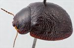
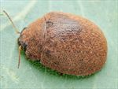
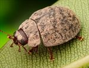
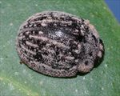
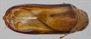
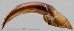
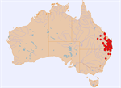

Click on images to enlarge

Male, Esk, S.E. Queensland

Male, Peak Crossing, S.E. Queensland

Male, Barraganyatti, N.E. New South Wales

Male, Bookookoorara, N.E. New South Wales

Aedeagus, dorsal view (Cunningham's Gap, S.E. Queensland)

Aedeagus, lateral view (Cunningham's Gap, S.E. Queensland)

Distribution
Ta24
Name
Trachymela simulans (Blackburn)
Reference specimen
2001-288a, Cunningham's Gap, SE Queensland.
Adult Description
Length: ♂ (6.1)6.4–7.9 mm (n=71), ♀ 7.3–8.9 mm (n=95).
Colouration:
Head: uniformly mid- to dark-brown, sometimes reddish-brown; labrum concolorous with or lighter in shade; mandibles dark-brown with black tips, sometimes almost completely black; antennomeres 1–3 uniformly straw-brown, 4–11 grading to a slightly or (more rarely) considerably darker brown towards apical antennomeres.
Pronotum: uniformly brown, concolorous with head.
Scutellum: brown, concolorous with or fractionally darker than adjacent region of pronotum.
Elytra: brown, concolorous with pronotum; punctures concolorous with interstices; humeral callus concolorous with surrounding area.
Venter & Legs: venter uniformly dark-brown (almost black) with distal leg segments sometimes a very slightly paler shade; inside surface of elytral epipleurae brown.
Cuticular Wax: colour uniform, light-greyish brown to mid-brown, usually present as a thick, even to slightly uneven layer over most of surface except around basal half of elytral suture where it tends to be more sparse, sometimes more unevenly distributed, with patches of very thick wax interspersed with much thinner patches. Rarely (see notes) with wax arranged linearly along VR3, VR5 and VR7 and as dotted lines along parts of VR2, VR4 and VR6.
Morphology:
Head: punctures moderately large (pd ≈ 2–2.5×ef) and slightly unevenly and densely distributed, adjacent punctures sometimes touching. Antennae moderate in length (AL/BL: ♂ 41–45%, ♀ 37–39%), filiform.
Pronotum: almost evenly curved transversely, foveal depression absent or very indistinct, centre often almost imperceptibly elevated, discal area with surface quite smooth, nitid or dull, puncturation clearly impressed with punctures similar in size to those on head, evenly to very slightly unevenly distributed and moderately dense (spacing ≈ 2–3pd), becoming considerably coarser towards lateral margins. Front margins join lateral margins in a smoothly rounded right-angle, with lateral margin curving smoothly and gradually towards rear margin, broadest about 2/3 of distance to posterio-lateral angle.
Scutellum: smooth or rough textured, usually unpunctured or with at most a sparse scatter of punctures.
Elytra: almost evenly rounded viewed laterally, greatest height is in front of middle of elytral margin; surface evenly curved, punctures surrounded by very convex interstices, closely spaced and rather evenly distributed, interstices are thickened in a few places forming small elevated verrucae at their intersections, forming a surface with a granular appearance, surface appears even more so in posterior third due to closer spacing of punctures, surface continuous (rarely slightly discontinuous) under humeral callus. Vertical extension of epipleura moderate (HCE/PW = 0.33–0.37).
Venter: prosternal process almost parallel or narrowing anteriorly, lightly closed anteriorly, a sparse scatter of long setae present along prosternal process and on mesoventrite; a single long seta present on anterior, median and posterior trochanters; front edge of metaventrite beveled, flat; inner edge of epipleurae lacking setae.
Male Genitalia (Aedeagus):
Dimensions: short (LPE/BL = 27–34%).
Dorsal view: shaft approximately parallel-sided or converging very slightly from base to posterior of ostium (WPE = 0.24–0.33 × LPE), from where sides converge more rapidly towards apex, with sometimes a slight discontinuity in this curvature near tip; tip triangular, dorsal surface very lightly sclerotized, dorso-median channel present but short and poorly defined, ostium relatively large.
Lateral view: shaft quite evenly and continually curved over whole length, tip deflexed.
Immature Stages
Unknown.
Similar species
Ta44, Ta70: One or the other of these species are often found together with Ta24 on Angophora. Both differ from Ta24 by having a much smoother elytral surface with large, clearly defined punctures and usually scattered with small, black patches on the interstices. The elytral marginal area is wider in Ta24 (HCE > 20% BL) than in the other species (HCE < 20% BL).
Notes
Taxonomy: It is likely to be the same as Trachymela simulans (Blackburn), by comparison with the type specimen in the BMNH. See also notes for Trachymela punctata (Marsham).
Distribution & Abundance: Ta24 is an abundant species in SE Queensland and NE New South Wales.
Host Associations: Found on Angophora, Blakella and Corymbia, but only rarely on Eucalyptus sp. (fewer than 10% of records, see below). Host records include Angophora costata (n=25), A. leiocarpa (n=4), A. floribunda (n=2), unspecified Angophora (n=18), Blakella maculata (n=8), B. tessellaris (n=1), Corymbia intermedia (n=16), C. trachyphloia (n=1) and unspecified “Corymbia” (which could be either Corymbia or Blakella) (n=46). Most records on “eucalypts” are likely to be either unidentified bloodwoods or not hosts. However, several specimens have been recorded from stringybark species. Included in these are two individuals found on Eucalyptus caliginosa near Stanthorpe (specimens [2018-221] and [2018-244]). Note, however, that when one of these specimen was supplied with leaves of E. caliginosa, it did not feed on them.
Morphological Variation: Ta24 is a dark brown species that lacks dorsal black maculae of any kind. There is a considerable amount of variation in the extent and form of elytral verrucae. Specimens from the south of the distribution (northern New South Wales) often have elytral verrucae that are slightly better developed and more discrete, particularly along verrucal rows VR3, VR5 and VR7. The specimens collected from from Eucalyptus caliginosa near Stanthorpe are morphologically almost identical to typical Ta24, including the dimensions of the aedeagus, but differ principally in the presence of longitudinal weal-like ridges on the elytra and in a markedly different distribution of cuticular wax on the elytra. The wax is rather unevenly distributed, being concentrated in a series of longitudinal lines of irregular thickness. This difference in cuticular wax distribution is rather striking and suggests that these specimens (including perhaps [1997-180] from Willawong) may belong to yet another, closely related species.
Copyright © 2026. All rights reserved.
{kind=link}
{kind=link}
{kind=link}
{kind=link}
{kind=link}
{kind=link}
{kind=link}